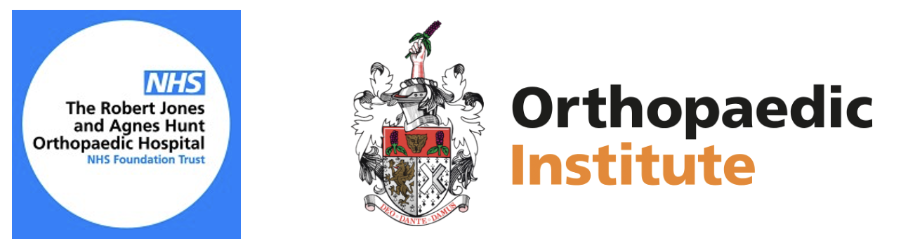

In April 2022, surgeons and researchers of the RJAH Orthopaedic Hospital gathered to share their latest developments in term of surgery, treatments and research for the 23rd Research Day. The day began with a Q&A session led by Mr Andrew Roberts, Director of Research and Ms Stacy Keegan, Acting Chief Executive. Scientists and surgeons presented their projects, and a one-hour session was dedicated to poster presentation during lunch time.
We must thank our judge Dr John Garcia who was also our guest lecturer this year, with his lecture on advances in CAR T cell therapy.
Award for the best scientific poster went to Dr Karina Wright for her poster presentation “Multilevel Modelling of Longitudinal Outcome Data 20 Years Post- Autologous Chondrocyte Implantation”.
Award for the best clinical presentation was conferred on Dr Jan Herman Kuiper for his presentation “Autologous chondrocyte implantation in osteochondral defects of the talus: Two to Fourteen Year Follow-up study”.
